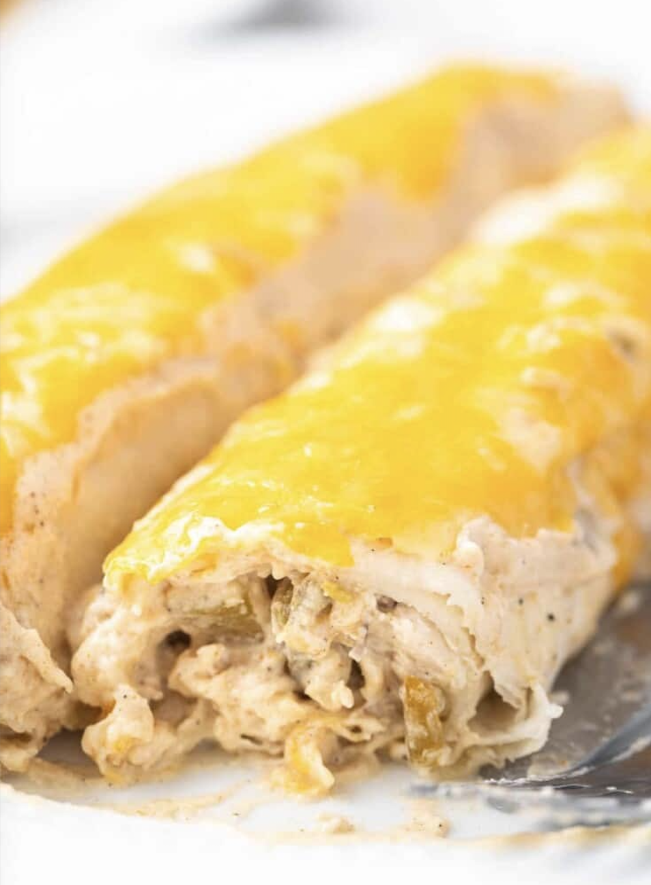

White Chicken Enchiladas

Description
Easy to make with a rotisserie chicken and cream cheese filling. And, they get covered in an amazingly flavorful sour cream sauce.
Nutrition
Serving: 1/8th of the recipe | Calories: 457kcal | Carbohydrates: 20g | Protein: 32g | Fat: 28g | Saturated Fat: 15g | Polyunsaturated Fat: 2g | Monounsaturated Fat: 8g | Trans Fat: 1g | Cholesterol: 129mg | Sodium: 998mg | Potassium: 407mg | Fiber: 1g | Sugar: 3g | Vitamin A: 775IU | Vitamin C: 5mg | Calcium: 307mg | Iron: 2mg
Ingredients
- 4 ounces cream cheese softened
- 1 (4 oz.) can diced green chilies divided
- 1 teaspoon garlic powder
- 1/2 teaspoon salt
- 1/4 teaspoon ground black pepper
- 4 cups pulled* rotisserie chicken no skin
- 2 cups shredded Monterey jack cheese divided
- 8 flour tortillas soft taco size
- 3 Tablespoons unsalted butter
- 3 Tablespoons all-purpose flour
- 1 1/2 cups chicken broth
- 1 Tablespoon taco seasoning not a whole packet
- 8 ounces sour cream
Steps
- Preheat oven to 350°F. Spray a 9x13 inch baking dish with cooking spray.
- In a large bowl, add the softened cream cheese. Add half the green chilies, the garlic powder, salt, and pepper. Mash with a fork until well combined. Add the chicken and 1 cup of the shredded cheese. Stir well.
- Divide the chicken mixture between the 8 tortillas. Mash the chicken mixture into a thin line down the center of the tortillas (I use my hands for this). Tightly roll up the tortillas around the chicken mixture. Place the tortillas seam side down in the baking dish.
- Make the sauce. Add the butter to a sauce pot and place it over medium heat. Once the butter is melted, add the flour. Whisk until combined. Cook 1 minute. Add the chicken broth, taco seasoning, and the remaining green chilies. Whisk until no flour lumps remain. Bring to a boil, stirring often. Once the sauce is thick, remove the pot from the heat. Add the sour cream to the sauce. Stir until smooth.
- Pour the sauce evenly over the enchiladas. Sprinkle the remaining 1 cup of shredded cheese on top.
- Bake for 25 minutes, until the cheese is melted and the sauce is bubbling around the edges of the dish.
- Cool for 10 minutes before serving.
Back to home